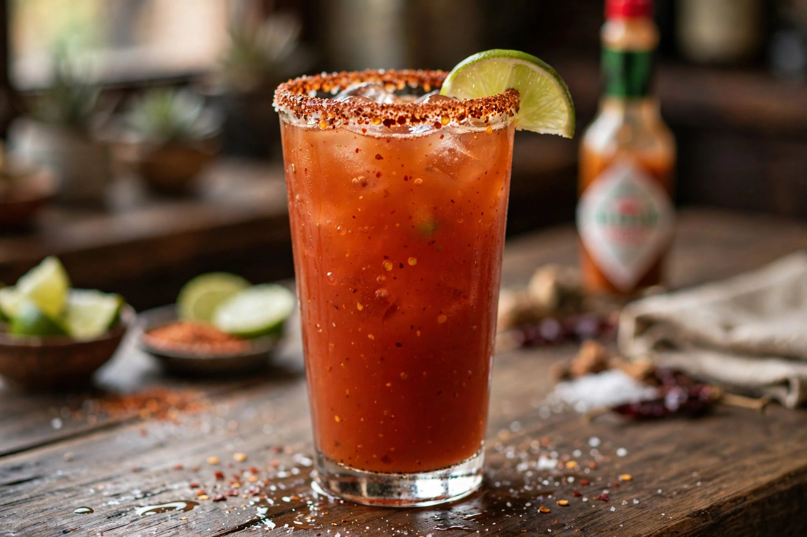

A michelada is a Mexican beer cocktail made with beer, lime juice, assorted sauces (such as hot sauce and Worcestershire sauce), spices, tomato juice and chilli peppers, served in a chilled, salt-rimmed glass. It is often compared to a Bloody Mary made with beer instead of vodka, and is popular as a refreshing drink and folk remedy for hangovers.

| Type | Beer cocktail |
|---|---|
| Origin | Mexico |
| Main ingredients | Beer, lime juice, tomato juice, hot sauce, salt |
| Served | On the rocks, salt-rimmed glass |
The name's origin is disputed: it may derive from mi chela helada ("my ice-cold beer"), from Michel Ésper, a regular at a San Luis Potosí sports club said to have ordered beer with lime, salt, ice and a straw in the 1960s–70s, or from the Spanish slang chela for a light beer. Preparations became widespread in Mexico by the 1980s and later in the United States.
A typical recipe rubs the rim of a pint glass with lime and dips it in salt or Tajín seasoning, then adds lime juice, Clamato or tomato juice, hot sauce such as Valentina or Tabasco, Worcestershire and soy or Maggi sauce, and black pepper, before topping with a Mexican lager such as Corona, Modelo or Tecate. Variations include the chelada (beer, lime and salt only), michelada with chamoy, and fruit versions with mango or tamarind.
Ready-to-drink micheladas are sold by major brewers, including Budweiser Chelada and Modelo Chelada, and michelada mixes are widely marketed in the US Southwest. Compare Bloody Mary, Caesar and Mimosa.
The drink features prominently in Mexican and Mexican-American food culture, at sporting events and summer gatherings, and lent its name to festivals in Texas and California.